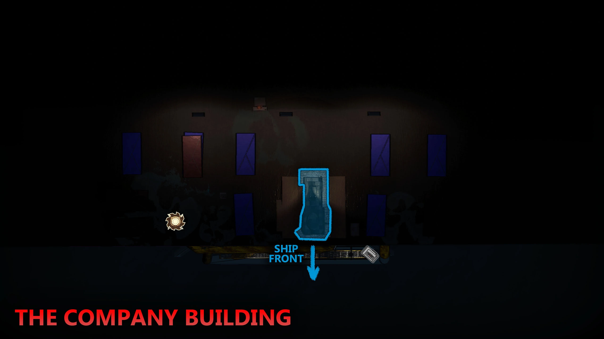
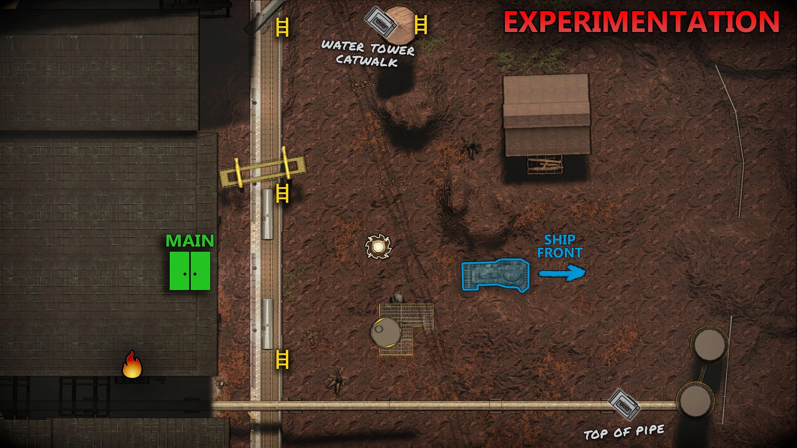
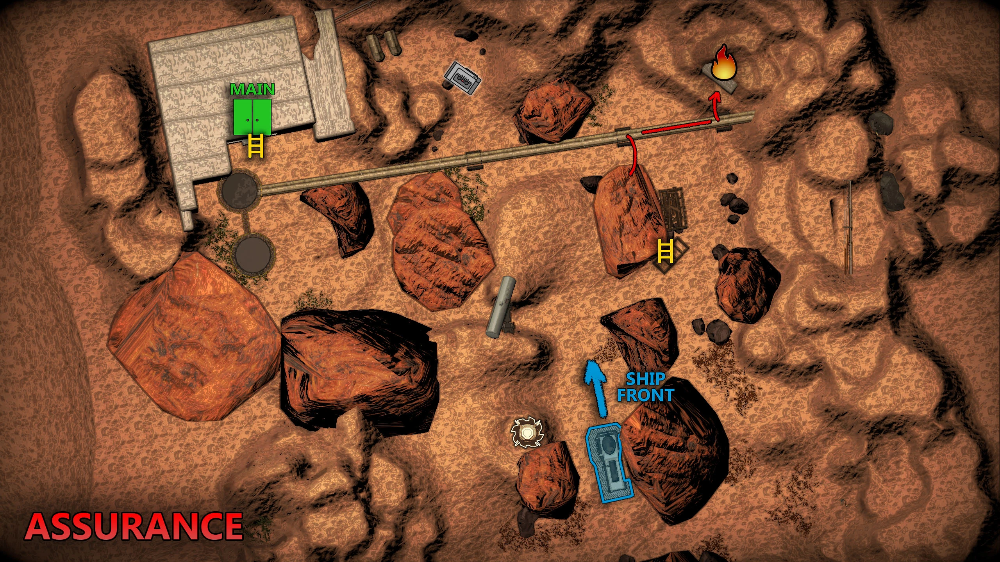
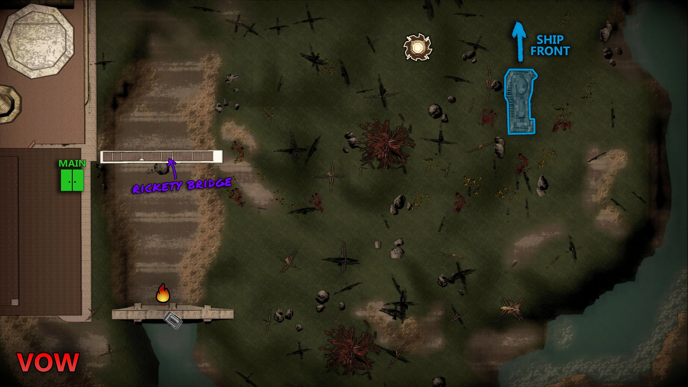
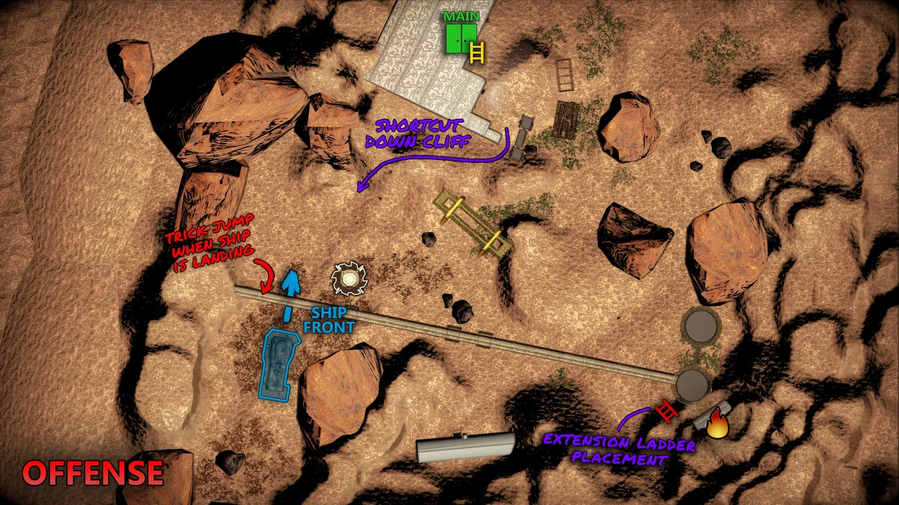
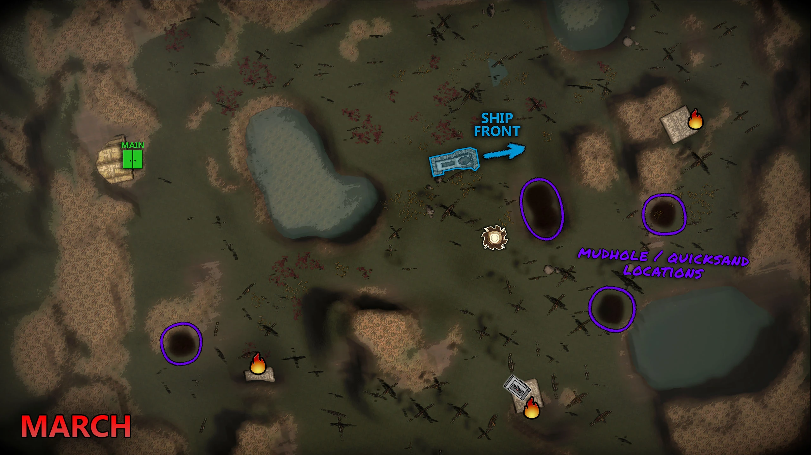
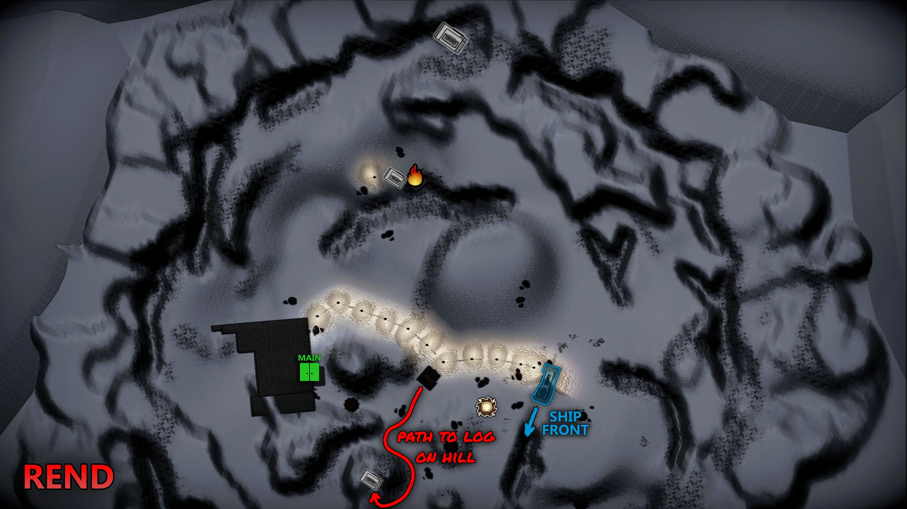
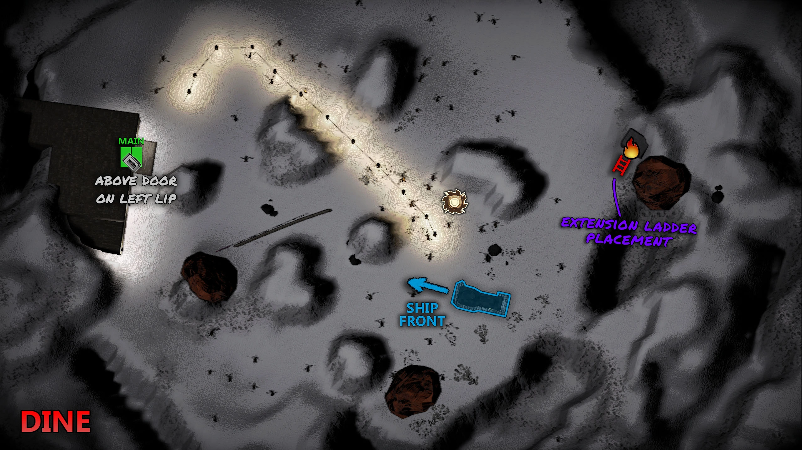
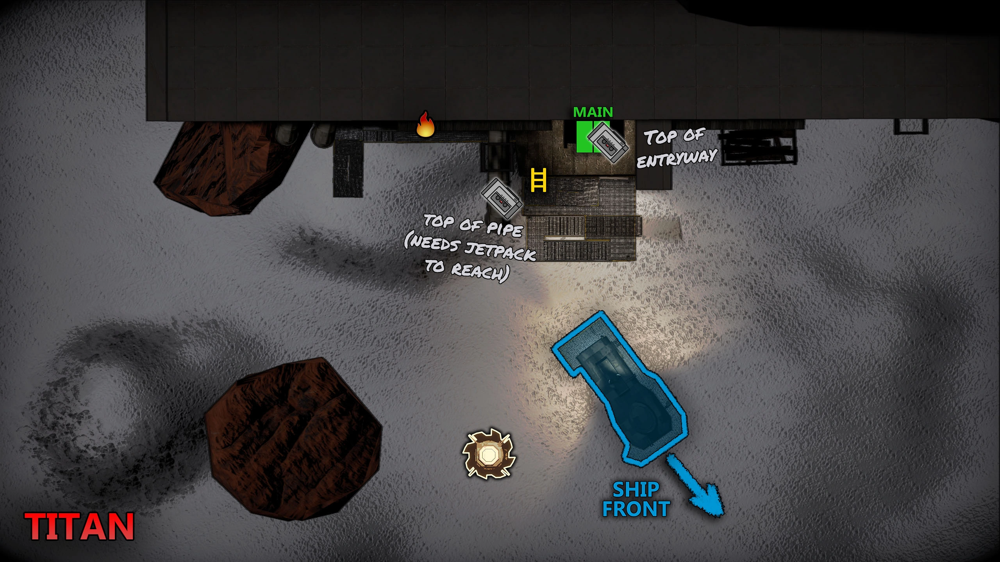

There are currently eight exomoons available to travel to in Lethal Company, plus the Company building, where you'll sell your scrap. There are different tiers of moon, each tier having more profitable scraps but also more dangerous.
Company Building
Gordion

Hazard Level: Safe
Where the company resides and where you can sell scraps.
Tier 1 Moons
Experimentation

Hazard Level: B
Generally considered Lethal Company’s easiest moon, Experimentation is the perfect place to start searching for scrap.
It's also in the lower price range.
Assurance

Hazard Level: D
The Assurance moon in Lethal Company is one of the least deadly places to get your scrap.
It's a longer walk to the main entrance compared to Experimentation, but there are typically less deadly monsters inside the facility - just be very, very careful when you head back to the ship.
Vow

Hazard Level: C
Lethal Company's Vow moon is a step up from Experimentation and Assurance.
If you manage to survive the facility, keep an ear out for heavy footsteps outside.
Tier 2 Moons
Offense

Hazard Level: B
Lethal Company's Offense moon tends to spawn more "in your face" enemies like spiders and thumpers - which is great news if you're not a fan of stalking brackens. Steer clear of the aggressive baboons as you find your way to the Offense moon's well-hidden main entrance.
March

Hazard Level D/B
Lethal Company's March moon is among the largest moons in the game. Besides the many thumpers and brackens, beware that March is also home to the dreaded jester enemy - which doesn't spawn on any other tier 1 or 2 moon.
Tier 3 Moons
Rend

Hazard Level: A
Lethal Company's Rend moon suffers from a chronic blizzard, obstructing your view and making it pretty difficult to find the main entrance.
Eyeless dogs are a common enemy on this moon - although you can't see them, they can certainly hear you.
On a bright note, this Lethal Company moon does offer some amazing loot.
Dine

Hazard Level: S
Lethal Company's Dine moon has a fancy mansion for you to explore. Sadly, it's home to jesters, coil heads, and other monstrosities.
Like Lethal Company's Rend moon, it's hard to navigate the outside area due to a blizzard.
Follow the lamps and don't wander off, or things may not end well for you and your team.
Titan

Hazard Level: S+
Lethal Company's Titan moon only has a small outside area, but a huge indoors facility.
Titan is the best place to find an enormous amount of loot, but it's also extremely dangerous as you'll find every type of enemy spawning on the indoor map, including lots of jesters and coil heads.